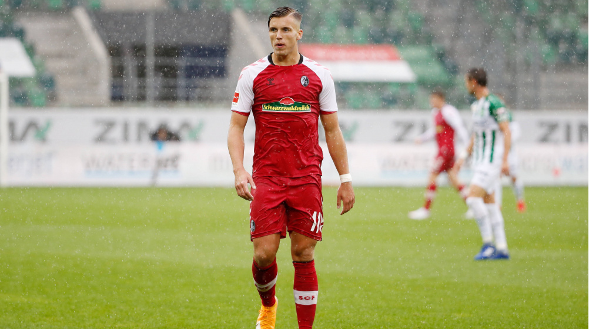

Ermedin Demirović

Ermedin Demirović je talentiran napadalec, ki se je pridružil naši agenciji leta 2015, ko ga je v Bosni in Herzegovini odkril naš scout Almir Aka Krcić. Njegova izjemna tehnika in občutek za gol sta hitro pritegnila pozornost, zaradi česar je prestopil v FC Augsburg. V svoji karieri je odigral številne ključne tekme in postal nepogrešljiv član ekipe. Njegova vztrajnost in delovna etika sta zgled mlajšim igralcem. Z 10 goli in 7 asistencami v prvi sezoni pri Triglavu sezoni je Demirović dokazal svojo vrednost. Ponosni smo, da je bil del naše agencije in se veselimo njegovih prihodnjih uspehov.
Rayan Cherki
Rayan Cherki je trenutni igralec Olympic lyon FC kjer igra pozicijo veznega/napadalnega igralca. Naši agenciji se je pridružil leta 2018 potem ko je v Maroku naš Scout Calvin Kleinović videl njegov talent. V NK Triglavu je odigral 31 tekem kjer je mrežo zatresel kar 13krat. V mladega talenta je bilo zainteresiranih kar nekaj svetovno znanih klubov a nazadnje se je odločil za Lyon in prestopil za takrat rekordnih 3.5 milijonov evrov. Sedaj je oznacen kot en najpomembnješih članov ekipe Lyona in njegova cena naj bi bila : 25M!. V ponos nam je da je Rayan lahko igral za nas.
Andrey Santos
Andrey Santos je nadarjeni vezist, ki se je naši agenciji pridružil leta 2017, potem ko ga je v Braziliji odkril naš scout Aleksander Aco. Njegova izjemna vizija igre in tehnične spretnosti so hitro pritegnile pozornost številnih klubov. Odločil se je za prestop v FC Chelsea, kjer sedaj navdušuje s svojimi nastopi. Njegova sposobnost nadzorovanja sredine igrišča in natančne podaje so ga naredile za ključnega igralca Chelseaja. Pri nas je zbral že 5 golov in 10 asistenc, kar potrjuje njegovo pomembnost za ekipo na višjem levelu. Ponosni smo, da je bil Andrey del naše agencije in se veselimo njegovih nadaljnjih uspehov.
John Kennedy

John Kennedy je izjemen nogometaš, rojen za velike stvari. Njegova pot se je začela leta 2017, ko ga je Aleksander Aco, scout agencije, odkril med talenti v Braziliji. Takrat se je pridružil agenciji in hitro pokazal svoj neizmiren potencial. Danes igra za Fluminense FC, kjer se je izkazal kot ključen člen njihove obrambe. S svojo izjemno tehniko in vizijo na igrišču John navdušuje navijače po vsem svetu. Njegova sposobnost v igri z žogo in strateško razmišljanje sta mu omogočila, da se je uveljavil kot stabilen in zanesljiv branilec. S tem je postal tudi tarča pozornosti mnogih evropskih klubov, ki sledijo njegovemu napredku z velikim zanimanjem.
Stipe Biuk

Stipe Biuk je obetaven nogometaš, ki je svojo pot začel leta 2020, ko ga je naš scout Almir Aka Krcić odkril na Hrvaškem. Takrat se je pridružil naši agenciji in hitro pokazal svoj izjemen talent. Danes je ključni član Real Valladolida, kjer s svojo izjemno igro v obrambi navdušuje navijače. Biuk odlikujejo odlične igralne sposobnosti in izjemen občutek za taktiko, kar ga postavlja med perspektivne evropske nogometaše. Njegov napredek in trud v igri so pritegnili pozornost številnih skvotov vodilnih evropskih klubov, ki spremljajo njegov vzpon z velikim zanimanjem.